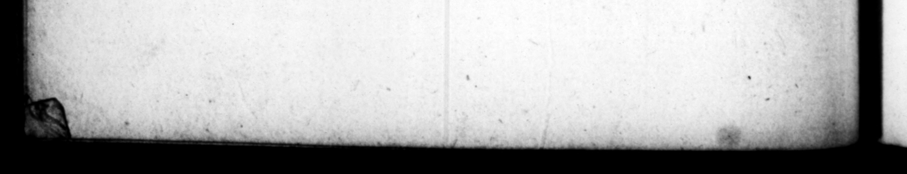

—_— * * A . . . 8 N | 1 £4 % ke 4 ae ks 2 „ C. SUET. TRANG © #5 cum nico tiepidatione be, avid at Ber e for Ben it e en te , of bh HO MNCs ce We Yiglavk caparun e Jan of 99 4 Me .exitum.... Sed ut diverla om- defiruBicg pig Wald nia, nandoque evaſiſſe eam, 5 9555 2 e ** ” nne e eee nnd ter which he ſet up very la in Glvam & incolumem cum 4 5 . ors in udio nantiantem, Sjecto fre nigbt, walli ia tie "comers n * . to hear the iſſue of his pries, "But Sine Ab tnborntrum ar. f informed ther Al things Bm * r | _ fp continue Fuſe ma Fall e K rn te Bos tremque ocerdi, quali depre- . a e "wi | henſum crimen voluntaria fe 1 , em ber f morte vitaſſet. Adduntur his 2. . * , Pn — atrociora, nec - incertis anc- 2 ern 2 ſb: er faſt bl toribus, ad. viſendum interfe- e e , ctæ cadaver accurriſſe, con- þ | Pu x an his ed . h . i 2 ſeized and lapped in chains, uns .Hciqune interim oborta, bibiſ- der preenee of I being exe fe. Neque tamen ſceleris his werber to, of ſingrt him," ut 4 conſcientiam, quamquam & Tame time einig der 10 ba ht militum & fſenatus papu- death, and giving out thas d of Iique gratulationibus con- che reſenrment of hir intended: pl, Wan en — aNt ſbe had laid violent hand- "upon bir. rr Self. There are ſime circumſtances te N IV eee lated ahout this aff air ſtil more” bur. agitari ſe marerna ſpecie, rid, and upon very ge authinh verberibus Furiarum, ac tæ- 7 „ e bo ee ape rr handling her limbs, dip, N Maos facro, evocare ſom and commented others, "and anes, & exorare tentavit. growing th rſty ding this furuh, Veregrinatione quidem Gra- 71. 1 fir drink; "Yet. bs wat not ablth "Che," Elkafinlis bg only BY, met bear, eit her then or at any time "af rum initiatione impii & ſce- "> reproaches of - his own Conſcience lerati voce preconis fubmo- for gbhis villany; thi): he was encourk verentury intereſſe non "anfus* d 4 the congrarulatery- addreſſes of elt. Junxitque parricidio b:th foldrery, fenate and people, fre matris amite necev. Quam gun conf g that he wr ba cum ex duritia alvi cubantem ty his mor br ghoſt; and perſecated viſiraret, & illa tractans la- with che whips and burning torches nuginem, ejus, ut afſolet, jam .. ys. - Nay be. attempted % dis natu, per blanditias iet ſacrifice to fetch up berg ree dixiſſet, Sul banc er. fim ble, in order to wollify ber rage mer volo, converfus againſt him. When he was in Gm, ad proximos, conteſtim fe 5 dv not proſume to. attend. at poſiturum velut irridens ait: perfo-mance of the Eleuſinian rites, wp precepirque medicis ut lar. en hearing rhe cryer aiſcharge all mph gius Furs enn gram. Nam | oy, and wicked villains from apts nec dum _defunttz bona in- fig. 7b rhe murrber of bis mathe; bt vaſit, ſuppreſſo teſtamento | {,..1 that of his aunt, for being 0 ne quid abſcederet 00 keep ber bed upon acconnt of an ing tion occaſiomed by a coftivencſs, he p 31d ber a viſie, and the good old is el, bis downy chin, and ſaying, may I t live to lee the firſt ing of this, I hall then be content co dy. He turn d to thoſe —
